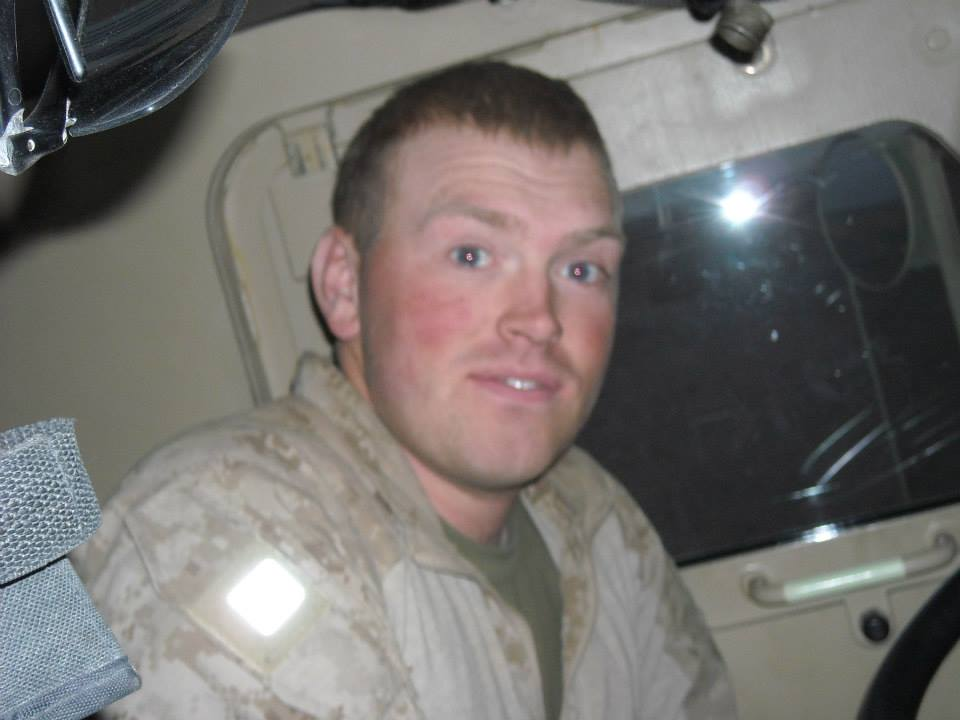
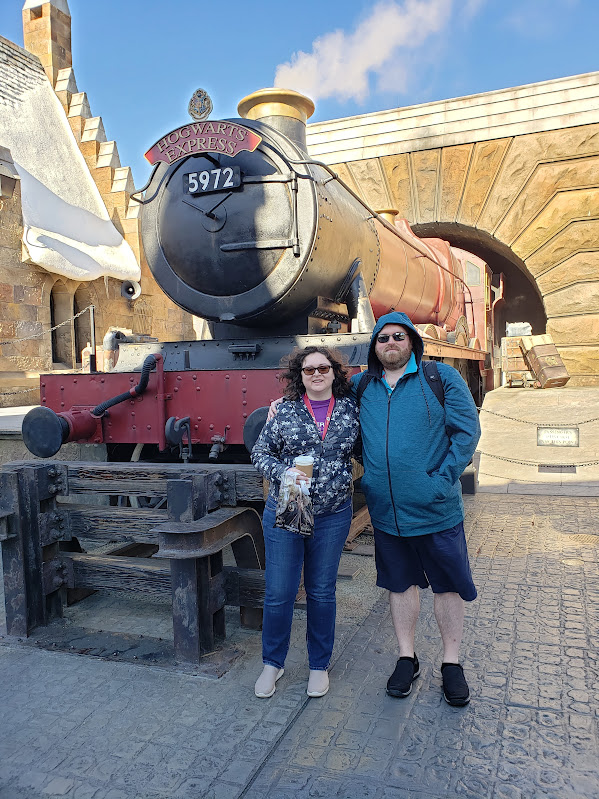

Where were you born? I was born in Bermerhaven Germany.
Where did you go to high school? Graduated high school at Henryy County High School in Paris, tn.
Did you join any clubs in high school? No clubs
How long have you been gaming? I would say since the early 90's.
When did you get into woodworking? Woodworking was during Covid.
When did you join the USMC? 2007, got out in 2011.
What were some of our military accomplishments? I was a squad leader, leading Marines before my first combat deployment.
Where did you get your Bachelor's degree? University of Michigan
What are some woodworking projects you've finished? Woodworking has mostly been cutting boards. I have attempted to make a pen on my lathe, but no success there, yet.
What is your favorite gaming genre? Recently, it's been survival but my all-time favorite is RPG.

Taken during a deployment. He doesn't remember if this is Iraq or Afghanistan.

Bob and Kari at The Wizarding World of Harry Potter